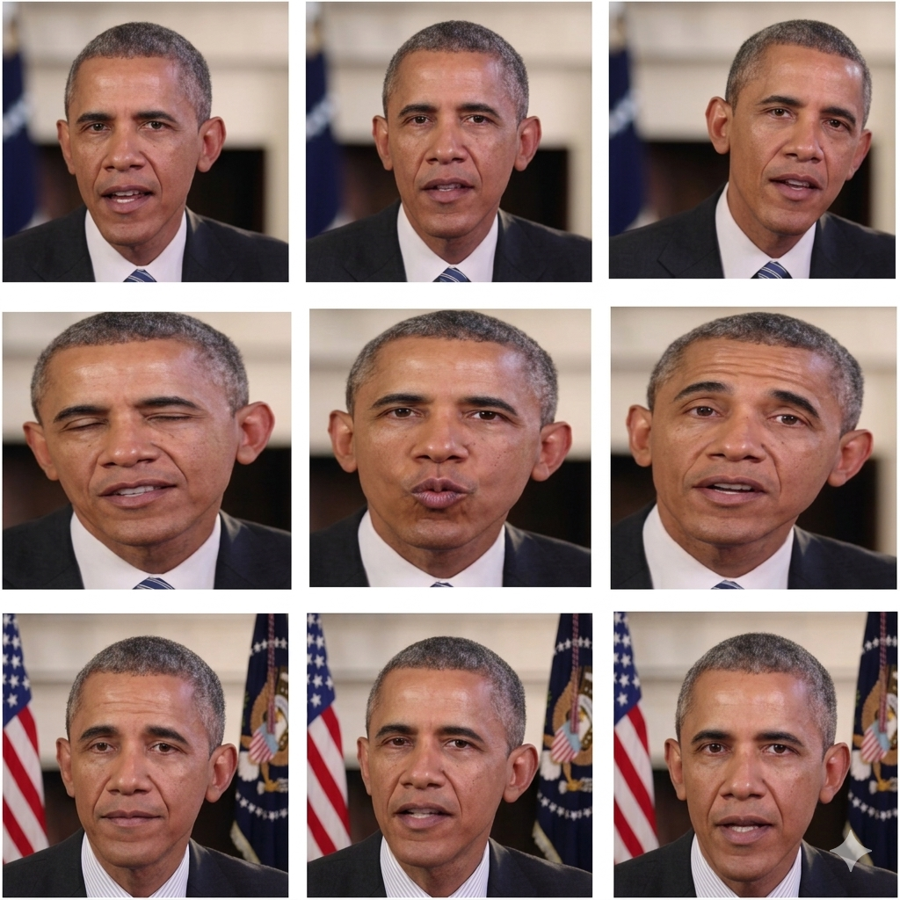
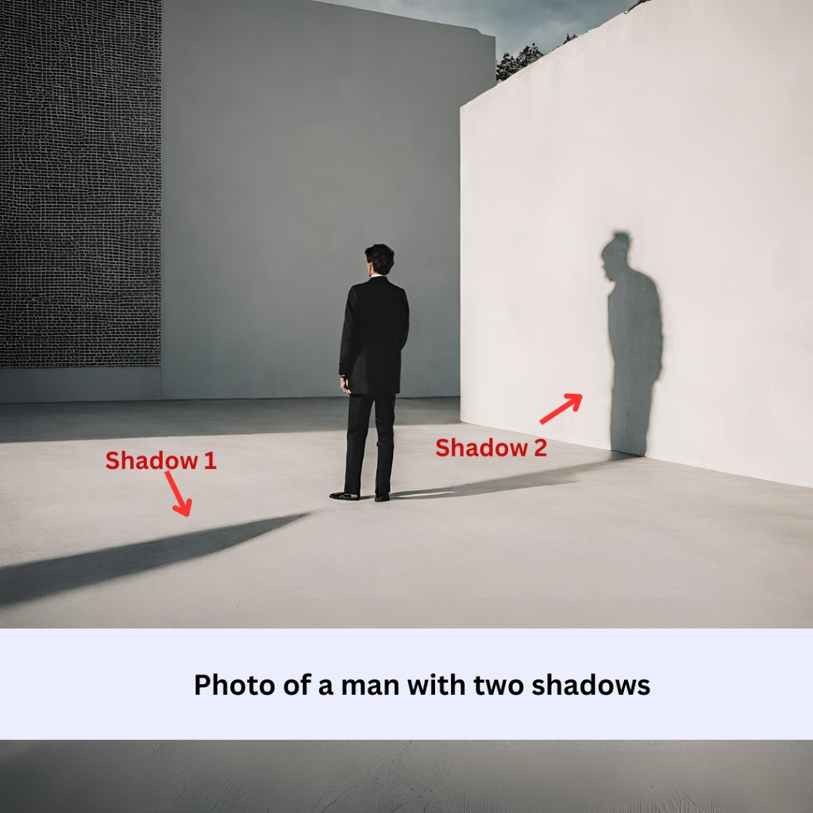

Viral videos spread quickly across social media because they capture attention, trigger emotions, or appear highly unusual. However, not all viral videos are authentic. Some are edited, taken out of context, or generated using advanced AI techniques.
To evaluate a viral video critically, it is important to examine its visual quality, audio consistency, source credibility, and overall context. A passive viewing approach can easily lead to misinformation, while an active and analytical mindset helps identify inconsistencies and manipulation.
What Makes a Viral Video Suspicious?
A viral video becomes suspicious when its content is designed to provoke strong reactions without providing clear context or verifiable sources. Many misleading videos rely on emotional impact rather than factual accuracy, making viewers more likely to share them without verification.
Instead of focusing only on what is shown, viewers should analyze how the video is presented. This includes examining the source, the editing style, and whether the content aligns with known facts.
- Videos that lack clear sources or original uploaders should be questioned.
- Content that triggers strong emotions may be designed to manipulate reactions.
- Content that triggers strong emotions may be designed to manipulate reactions.
- Unusual claims without supporting evidence require verification.
AI-generated or manipulated videos often struggle with fine details such as hands, facial expressions, and background consistency.
Common Visual Red Flags
One of the first steps in identifying a fake viral video is to carefully observe visual inconsistencies. These are often subtle but become noticeable when analyzed critically.
-
1
Unnatural movements
People or objects move in ways that look stiff, delayed, or unrealistic.
-
2
Audio and lip-sync mismatch
The voice does not align with the speaker’s mouth movements.
-
3
Visual glitches or distortions
Flickering, warping, or blurring appears in certain frames.
-
4
Inconsistent lighting or shadows
Lighting changes unnaturally between frames or does not match the environment.
-
5
Missing or unclear source
The origin of the video cannot be traced or verified.
Visual Indicators in Misleading Videos
1. Deepfake Face Mismatch Frame Comparison

One of the most noticeable signs of a fake viral video is a mismatch between lip movements and the spoken audio. In some AI-generated or manipulated videos, the timing of speech does not perfectly align with the movement of the mouth. Facial expressions may also appear unnatural or slightly delayed. These inconsistencies suggest that the video may have been altered or artificially generated.
- Lip movements may not match the spoken words.
- Facial expressions can look unnatural or delayed.
- There may be slight delays between audio and visuals.
- Edges of the face may appear blurred or distorted.
2. Unnatural Movements and Glitches
AI-generated videos often struggle to maintain consistent and natural movement. Sudden glitches, warped body parts, or unnatural transitions between frames can appear, especially in complex scenes. These visual errors may only last for a moment, but they are strong indicators that the video has been artificially created or manipulated.
- Body parts may appear warped or incorrectly shaped.
- Movements can look robotic or unnatural.
- Sudden visual glitches may appear between frames.
- Fast motion can cause noticeable distortions.
3. Inconsistent Lighting and Shadows

Not all fake videos rely on AI. Many misleading clips are created through selective editing, where parts of the video are removed to change its meaning. Abrupt cuts or missing context can make a video appear more sensational than it actually is.
- Important context may be intentionally removed.
- Clips may start or end abruptly to hide details.
- The sequence of events may be rearranged.
Why Viral Videos Are Difficult to Verify
Viral videos are often shared rapidly across multiple platforms, making it difficult to trace their original source. As the video spreads, it may be reposted, edited, or re-captioned, further distorting its authenticity.
In addition, viewers tend to rely on emotional reactions rather than critical analysis. This creates an environment where misleading videos can gain credibility simply because they are widely shared.
- Rapid sharing reduces time for proper verification.
- Reuploads can remove original context and source information.
- Emotional reactions can override critical thinking.
- Algorithms promote engaging content, not necessarily accurate content.
How to Evaluate Viral Videos Critically
To avoid being misled, viewers must actively evaluate viral videos rather than passively consuming them. This involves questioning both the content and the context in which it is presented.
- Check the original source of the video before trusting it.
- Look for full versions of the clip to understand the context.
- Compare the video with reports from reliable sources.
- Analyze both visual and audio elements for inconsistencies.
A video may appear convincing at first glance, but careful analysis often reveals inconsistencies. By developing a critical mindset, viewers can reduce the risk of being influenced by misleading or manipulated content.
What We've Learned
Viral videos are powerful tools for communication, but they can also be used to spread misinformation. By understanding common signs such as visual glitches, audio mismatches, and misleading edits, viewers can better identify manipulated content.
Rather than accepting videos at face value, it is important to analyze their source, structure, and intent. A critical and analytical approach allows individuals to distinguish between authentic content and deceptive media.
A viral video is not automatically a truthful one. Always verify before you trust—and before you share.